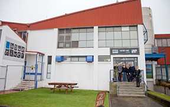
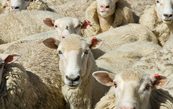
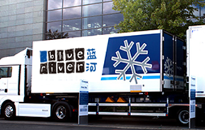
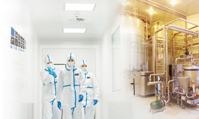

位于南纬46度的新西兰Invercargill极地牧场，远离雾霾带，空气纯净，牧草肥美，冰川泉水富含矿物质。

在被誉为“人间净土”的新西兰孕育而生，每一滴绵羊奶都蕴含极致品质。
历经15年精心优育的奶绵羊——东弗里斯 奶绵羊，在极地牧场的广阔天地里放养， 因此快乐而健康。

新西兰食品安全局、环保局定期对牧场 进行审查，确保奶健康。
每只绵羊的胃里，都被植入电子芯片，备有独立的健康档案，有专门的营养师呵护健康。从牧场到餐桌全产业链品质可追溯。
鲜奶在4℃下冷链运输，极大限度保留营养成分，避免营养流失和污染。所有鲜奶均需检测微生物、抗生素、体细胞数等指标，确保鲜奶质量。
我们把质量和责任放在了所有经营活动的核心，蓝河已成为全球上乘品质绵羊奶的代名词。100%在新西兰境内完成品质自控可追溯体系，可追踪收奶、生产、包装及运输全过程，细节尽掌握。

产品严格按照HACCP规范生产，初级产业部 MPI每3个月到工厂进行实地审查，对工厂文 件制度、HACCP实施情况进行审核、把关。
